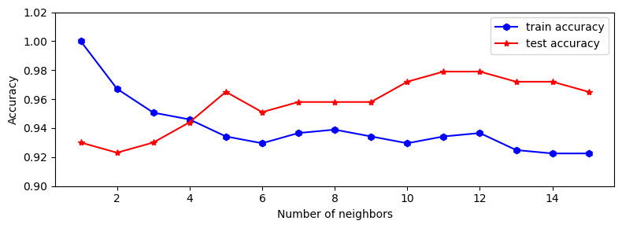
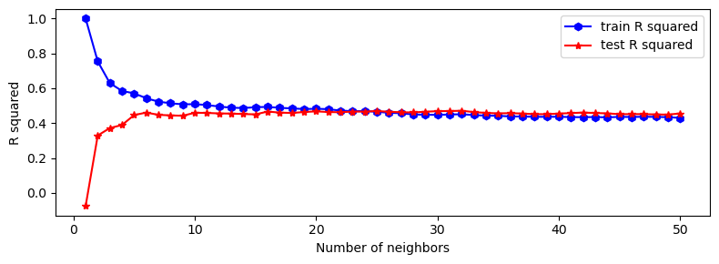

from sklearn.datasets import load_breast_cancer
cancer = load_breast_cancer()5 K-Nearest Neighbors
5.1 KNN for Classification
Load data.
cancer['data']array([[1.799e+01, 1.038e+01, 1.228e+02, ..., 2.654e-01, 4.601e-01,
1.189e-01],
[2.057e+01, 1.777e+01, 1.329e+02, ..., 1.860e-01, 2.750e-01,
8.902e-02],
[1.969e+01, 2.125e+01, 1.300e+02, ..., 2.430e-01, 3.613e-01,
8.758e-02],
...,
[1.660e+01, 2.808e+01, 1.083e+02, ..., 1.418e-01, 2.218e-01,
7.820e-02],
[2.060e+01, 2.933e+01, 1.401e+02, ..., 2.650e-01, 4.087e-01,
1.240e-01],
[7.760e+00, 2.454e+01, 4.792e+01, ..., 0.000e+00, 2.871e-01,
7.039e-02]])Split data.
from sklearn.model_selection import train_test_split
X_train, X_test, y_train, y_test = train_test_split(cancer['data'], cancer['target'], random_state=42)X_train.shape, y_train.shape((426, 30), (426,))X_test.shape, y_test.shape((143, 30), (143,))Train model.
from sklearn.neighbors import KNeighborsClassifier
knn = KNeighborsClassifier(n_neighbors=5)
knn.fit(X_train, y_train)KNeighborsClassifier()In a Jupyter environment, please rerun this cell to show the HTML representation or trust the notebook.
On GitHub, the HTML representation is unable to render, please try loading this page with nbviewer.org.
KNeighborsClassifier()
knn.predict(X_test)array([1, 0, 0, 1, 1, 0, 0, 0, 1, 1, 1, 0, 1, 0, 1, 0, 1, 1, 1, 0, 0, 1,
0, 1, 1, 1, 1, 1, 1, 0, 1, 1, 1, 1, 1, 1, 0, 1, 0, 1, 1, 0, 1, 1,
1, 1, 1, 1, 1, 1, 0, 0, 1, 1, 1, 1, 1, 0, 1, 1, 1, 0, 0, 1, 1, 1,
0, 0, 1, 1, 0, 0, 1, 0, 1, 1, 1, 0, 1, 1, 0, 1, 1, 0, 0, 0, 1, 0,
1, 1, 1, 1, 1, 1, 1, 1, 0, 0, 1, 0, 0, 1, 0, 0, 1, 1, 1, 0, 1, 1,
0, 1, 0, 0, 1, 0, 1, 1, 1, 0, 1, 1, 1, 0, 1, 0, 0, 1, 1, 0, 0, 0,
1, 1, 0, 0, 1, 1, 1, 0, 1, 0, 1])knn.predict_proba(X_test).shape(143, 2)Score model.
knn.score(X_test, y_test)0.965034965034965import matplotlib.pyplot as plt
from sklearn.datasets import load_breast_cancer
from sklearn.model_selection import train_test_split
from sklearn.neighbors import KNeighborsClassifier
cancer = load_breast_cancer()
X_train, X_test, y_train, y_test = train_test_split(cancer['data'], cancer['target'], random_state=42)
train_scores, test_scores = [], []
neighbor_candidates = range(1, 16)
for n_neighbors in neighbor_candidates:
knn = KNeighborsClassifier(n_neighbors=n_neighbors)
knn.fit(X_train, y_train)
train_score = knn.score(X_train, y_train)
test_score = knn.score(X_test, y_test)
train_scores.append(train_score)
test_scores.append(test_score)
fig, ax = plt.subplots(1, 1, figsize=(8, 3))
ax.plot(neighbor_candidates, train_scores, 'b-h', label='train accuracy')
ax.plot(neighbor_candidates, test_scores, 'r-*', label='test accuracy')
ax.set_xlabel('Number of neighbors')
ax.set_ylabel('Accuracy')
ax.set_ylim([0.9, 1.02])
ax.legend()
fig.tight_layout()
5.2 KNN for Regression
from sklearn.datasets import load_diabetes
diabetes = load_diabetes()from sklearn.model_selection import train_test_split
X_train, X_test, y_train, y_test = train_test_split(diabetes['data'], diabetes['target'], random_state=42)X_train.shape, X_test.shape, y_train.shape, y_test.shape((331, 10), (111, 10), (331,), (111,))from sklearn.neighbors import KNeighborsRegressor
knn = KNeighborsRegressor(n_neighbors=3)
knn.fit(X_train, y_train)
y_pred = knn.predict(X_test)knn.score(X_test, y_test)0.37222167132521977import matplotlib.pyplot as plt
from sklearn.datasets import load_diabetes
from sklearn.model_selection import train_test_split
from sklearn.neighbors import KNeighborsRegressor
diabetes = load_diabetes()
X_train, X_test, y_train, y_test = train_test_split(diabetes['data'], diabetes['target'], random_state=42)
train_scores, test_scores = [], []
neighbor_candidates = range(1, 51)
for n_neighbors in neighbor_candidates:
knn = KNeighborsRegressor(n_neighbors=n_neighbors)
knn.fit(X_train, y_train)
train_score = knn.score(X_train, y_train)
test_score = knn.score(X_test, y_test)
train_scores.append(train_score)
test_scores.append(test_score)
fig, ax = plt.subplots(1, 1, figsize=(8, 3))
ax.plot(neighbor_candidates, train_scores, 'b-h', label='train R squared')
ax.plot(neighbor_candidates, test_scores, 'r-*', label='test R squared')
ax.set_xlabel('Number of neighbors')
ax.set_ylabel('R squared')
ax.legend()
fig.tight_layout()